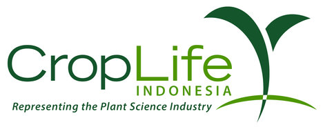

← Selected work
CropLife Indonesia


In 2023, I had the opportunity to strategize a communication plan for CropLife Indonesia (CLID) under Dialogue Communications, focusing on strengthening public understanding of biotechnology in agriculture. My main objective was to make this complex and often technical topic more accessible to the general public while ensuring alignment with the interests of key stakeholders, from policymakers to farmers.
The main challenge was transforming scientific narratives into engaging, easy-to-digest messages that could resonate with both industry professionals and everyday audiences. Beyond that, I needed to identify credible public figures who could authentically advocate for biotechnology, bridging the gap between awareness and acceptance.
By combining storytelling with strategic content planning, I helped increase CLID’s social media visibility and audience engagement, ensuring each communication piece served both educational and advocacy purposes. The campaign also successfully positioned CLID as a trusted voice in Indonesia’s agricultural innovation space.
 AntaraCropLife: Benih bioteknologi diperlukan guna perkuat ketahanan pangan
AntaraCropLife: Benih bioteknologi diperlukan guna perkuat ketahanan pangan IDN TimesKerap Gagal Panen, Petani Harus Adopsi Konsep Lebih Modern
IDN TimesKerap Gagal Panen, Petani Harus Adopsi Konsep Lebih Modern Antara FotoSarasehan pertanian berkelanjutan
Antara FotoSarasehan pertanian berkelanjutan detikFinancePertanian Modern Upaya Menggenjot Produksi Panen
detikFinancePertanian Modern Upaya Menggenjot Produksi Panen